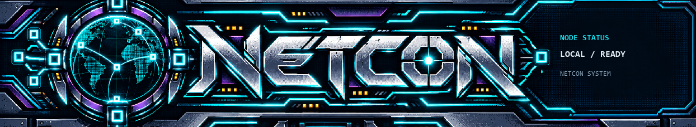
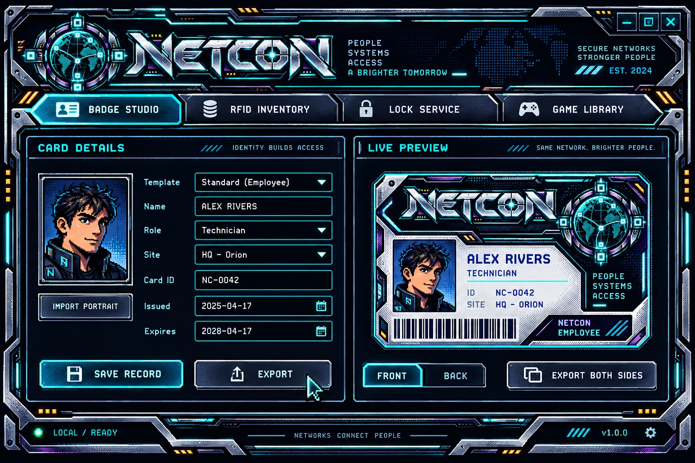

NETCON / 16-BIT UI KIT
GPT-generated banner, screen concept, four panel frames, four button states and twelve cursor shapes. Individual Windows cursors include 32px and 48px resources with configured hotspots.
Banner artwork
Header rendered by the app

UI design concept
Visual target for the interface. The current app uses the generated banner, frames, button states and native pointer, link and text cursors. The concept's badge design is illustrative.

Panel frames
Button states
Windows cursor set